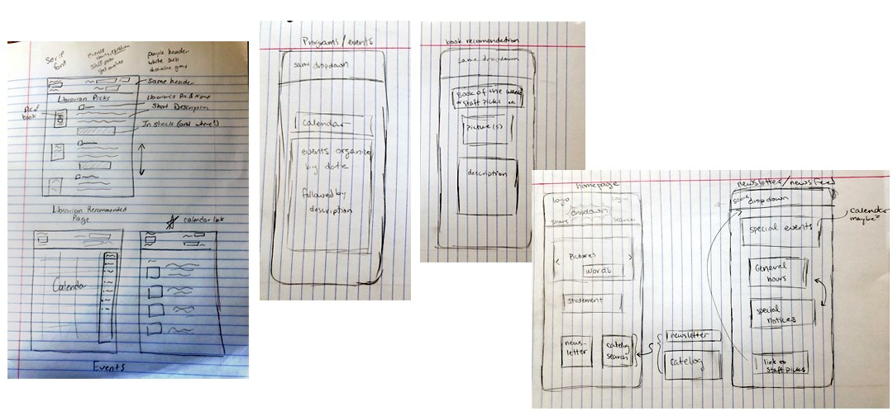

If I had to sum up what I learned this term into single phrase, it would be something along the lines of 'design for the time you have'.
I am a Chemical Engineering major, not a Computer Science major, and on top of that I was gone for several of the projects because I am a senior and I was going on graduate school visits. Learning the various modalities for each project in a week was difficult, especially since many of them had very minimal tutorials and documentation. Still, it was an excellent crash-course in how to learn to use websites and do web development.
The most helpful piece of the design process that I was able to practice this term was sketching and rapid prototyping. I'm very busy, so I usually jump into a project to save time, but it was an interesting process to try to work through mistakes quickly at the beginning so that there would be fewer of them when we eventually implemented the project.
The problem that I frequently ran into was that the mistakes we made weren't related to the design itself - they were related to our technical ability. The projects went by so fast that by the time we were getting comfortable using a particular tool, it would change again. By the end of the term, one of the most important things to consider when choosing an idea to design around was whether or not that idea would still be functional if it was only 30% finished.
Some programs that seemed like they should be fairly intuitive, like the chatbot program Flow XO, became extremely cumbersome to use as soon as you tried to expand the project. Other modalities, like JavaScript, were much more flexible and could do nearly anything we wanted them to, but no one knew how to use them well enough to fully take advantage of their potential.
The biggest difference between design and realization was during Project 2, Design for Understanding, and Project 3, Design for Tension. Those were also the weeks when I was missing for the weekend due to graduate school visits, so I don't know everything about the details of how the designs were adjusted to account for people's technical abilities.


My favorite project of the term was the last one, Design for Another World, because AFrame had an excellent tutorial that was easy to work through, so I felt like I actually learned a lot about HTML and AFrame from that project. I wish we had more time to develop that project, and that it wasn't so constrained by hardware - I tried to use a lot of examples that just shut down or didn't have their full functionality because I was in a web browser instead of using a VR headset. I could have looked into getting a VR headset, but the project only lasted a week, and they give me motion-sickness anyway.
If I had to give advice to someone coming into HCI who hadn't taken the class before, it would be to plan to do something simple you can add onto if you have time, rather than chose something ambitious and likely not be able to complete it. I think a lot of the design advice in the reading is more applicable when there are fewer technical limitations because you are already familiar with the medium.